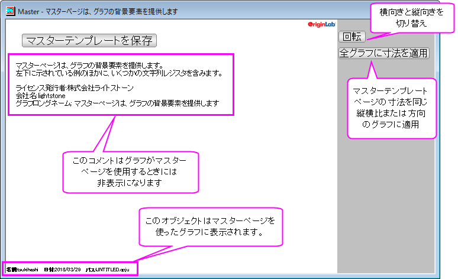
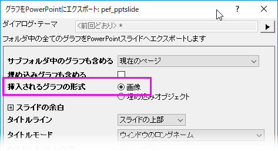
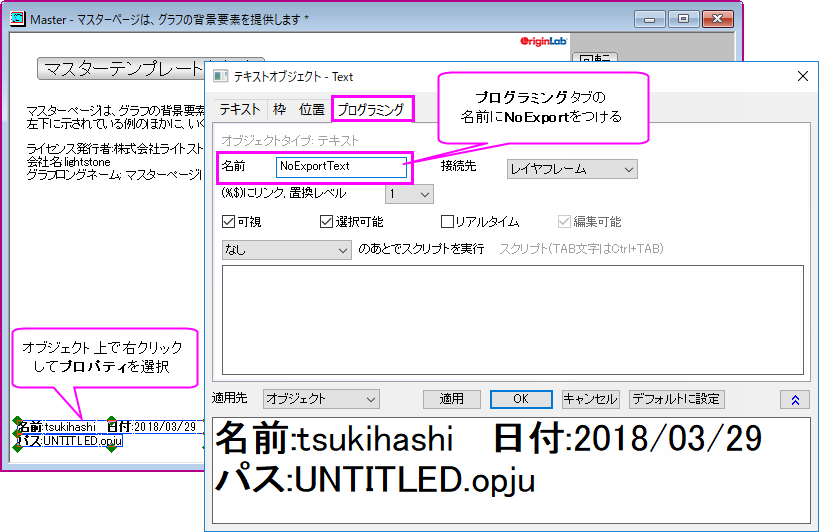

グラフに適用するマスターページレイアウトの作成
Master-Page-Layout
グラフ全てに適用する注釈を簡単に作成するために、Originにはマスター項目 機能があります。 プロジェクト内の指定したグラフやレイアウトに、カスタム背景、会社ロゴやラベル、画像などを適用するときに便利です。
MASTER.OTPUテンプレートを使う
- メニューからファイル：新規作成：マスターページ を選びます。Master.otpu テンプレートが開きます。
 | このメニュー項目を選択したときにプロジェクトのルートフォルダにいない場合、プロジェクトルートフォルダに切り替えるか尋ねられます。
Note: プロジェクトルートフォルダにマスターページがあると、マスターページと同じ寸法のグラフに、自動でマスター項目が表示されます。（Origin 2018b以降）マスターテンプレートがプロジェクトルートフォルダにない場合、既存のグラフに対しては、マスターテンプレートを作成または更新したとき、グラフウィンドウをアクティブにしてリフレッシュボタンをクリックしてマスター項目を表示する必要があります。
|
マスターページウィンドウには次の情報が表示されます。

- マスターテンプレートを編集します。
- マスターページは他のグラフウィンドウで表示したいプロパティやオブジェクトのみを含みます。
- Note: マスターテンプレートを保存ボタンの下に表示されるコメントは「非表示」で、グラフウィンドウには適用されません。
- マスターテンプレートを保存ボタンをクリックします。
- 保存すると、マスターテンプレートが、 "アクティブウィンドウ名".otpu という名前でUser Filesフォルダに保存されます。
(例: "C:\Users\YourName\Documents\OriginLab\User Files\Master.otpu")
- 縦向きに切り替える回転ボタンをクリックすると、テンプレートのショートネームはPortraitになります。そして、Portrait.otpuを保存します。
| テキストツールを使用してプロジェクトやシステム情報を静的テキストオブジェクトとしてマスターテンプレートに追加することもできますが、再利用できるテンプレートを作成することが目的であるため、情報を「ソフトコーディング」したテキストラベルを検討してください。詳細は、以下のトピックを参照してください。
|
マスター項目コントロールの表示とグラフページ（ウィンドウ）レベルでのエクスポート
マスターテンプレートを設定すると、マスター項目は、デフォルトでOriginワークスペースにあるテンプレートと同じ寸法のすべてのグラフに表示されます。マスター項目はエクスポート、コピー、印刷時のグラフにも適用されます。
ワークスペース内でマスター項目を表示せず、エクスポート、コピー、印刷時にのみマスター項目を表示したい場合、グラフの作図の詳細ダイアログで無効にできます。
- フォーマット: ページを選択してページレベルの作図の詳細ダイアログを開きます。
- 表示指定タブを開きます。
- マスター項目を使うのチェックを外します。このマスター項目の無効の設定は、このグラフページ限定のものです。マスター項目を使うのチェックがついている他のページには効果がありません。
MS WordまたはPowerPointファイルに共通要素を追加
編集: ページコピーは通常、Originグラフオブジェクトをクリップボードにコピーします。オブジェクトがMS Word文書に貼り付けられ、グラフオブジェクトをダブルクリックすると、グラフはOriginのOLEインスタンスで開き、編集できます。マスター項目がグラフに存在するとき、編集: ページコピーは、通常のグラフオブジェクトと異なり、画像オブジェクト(EMF)をクリップボードに置きます。
MS Word文書で編集可能なOriginのグラフオブジェクトが必要な場合は、編集: ページコピー操作の前に、作図の詳細のマスター項目を使うのチェックを外してください。あるいは、LabTalkシステム変数@GMC = 1を使用します。システム変数を使ってOriginのデフォルトの動作の設定についての詳細は、システム変数を使ってOriginをカスタマイズを参照してください。
同様に、OriginのPowerPointに送るの機能でも、PowerPointプレゼンテーションにマスター項目のOLE埋め込みをサポートしていません。PowerPointプレゼンテーションのOriginグラフに共通要素を追加するには、以下の方法があります。
- PowerPointのスライドマスターを作成してマスター項目を含める
- OriginからPowerPointにグラフを送るときに選択できるマスター項目スライドを含む最小限のPowerPointファイルを作成する(スライドマスターの作成は必要ありません)
- PowerPointにグラフを送るのグラフを画像として挿入
- 
Originセッションまたはプロジェクトでのマスター項目の表示制御
各グラフウィンドウでマスター項目を使うを無効にしなくても、Originセッションまたはプロジェクトで表示を制御することができます。これはワークスペース表示を切り替え、エクスポート、印刷時には影響を与えません（Noteを参照）。
- 任意のグラフウィンドウをアクティブにし、表示: 表示様式: マスター項目の画面表示のチェックを付けるとマスター項目が表示されます。
- 表示: 表示様式: マスター項目の画面表示のチェックを外すと、マスター項目が非表示になります。
|
Notes:
- アクティブグラフウィンドウの「作図の詳細(ページ)」ダイアログボックスでマスター項目を使うチェックボックスのチェックを外さないと、このメニューコマンドは利用できません。
- 表示: 表示様式: マスター項目の画面表示の設定はプロジェクトに保存されます。
- 表示: 表示様式: マスター項目の画面表示のチェックを外しても、グラフのコピー、印刷、エクスポート時にはマスター項目は非表示になりません。
|
マスター項目をワークスペースから選択的に除外しエクスポートまたは印刷
ワークスペースおよびエクスポートまたは印刷ページでマスター項目を選択的に除外するメカニズムがあります。グラフページ上のすべてのオブジェクト(テキスト、描画、ボタンなど)には名前があります。この名前は、オブジェクトのプロパティダイアログのプログラミングタブで確認できます。
ワークスペースまたはページコピーおよびエクスポート時に特定のマスターページオブジェクトを表示したくない場合、オブジェクト名に"NoExport"を付加します（例: "NoExportObjectName"）。
- 
マスターページに関するその他の注意
- Master.otpuテンプレートを元にして作成したグラフを開くには、次のLabTalkスクリプトを使います。
win -t plot master Master;
Note: このスクリプトはアクティブフォルダ内のマスターページウィンドウを開きます。アクティブフォルダがルートフォルダでない場合は、グラフウィンドウをそれぞれリフレッシュしてマスター項目を表示する必要があります。
- ファイル：新規作成：マスターページ メニューを使ってマスターページウィンドウを開きますが、横向きがデフォルトです。縦向きのテンプレートを使用または保存したい場合、回転ボタンをクリックしてページ寸法を入れ替えます。また、ページショートネームがPortraitになり、このテンプレートをPortrait.otpuに保存できます。さらに、ファイル：ページの設定メニューを使って、グラフページの向きを変更することができます。
- マスター項目は、テンプレートと同じ寸法のグラフページでのみ表示されます。全グラフに寸法を適用ボタンは、マスターテンプレートのページ寸法を同じ方向のグラフ全てに適用します。
- レイアウトページウィンドウにマスター項目を含めることもできます。 デフォルトで、レイアウトページの作図の詳細ダイアログボックスのマスター項目を使うボックスと表示: 表示様式: マスター項目の画面表示にはチェックがついています。